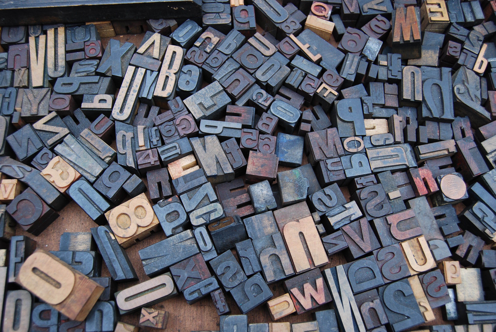

Color
Color is the most important to style the webpage selecting colors plays a major role in the style part .

Fonts
Typography is the most essential part of styling the webpage its make the webpage more Readable. Fonts plays amajor role in this typography

Code Snippet
The block of code that mostly every Developer used.